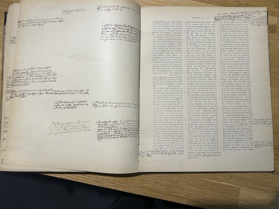
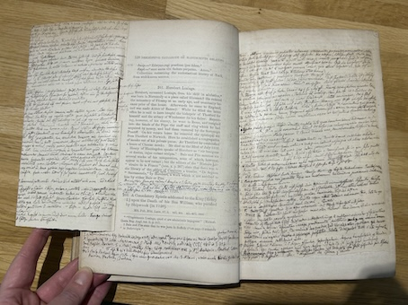
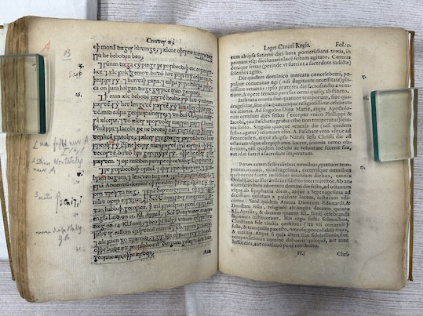

First of all, you can download copy of the catalogue here. Or find it on Google sheets here.
Parts of the library can be searched through the University of Tokyo’s normal library search. It can be searched here, by going to ‘Advanced Search’ and choosing ‘Liebermann Collection’ from the ‘Collections’ tab under ‘Search Options’. Note that this includes about half of the known items in the library.
–––––––––––––––––––––––––––––––––––
As mentioned in a previous blog post, Liebermann’s books were dispersed across the general holdings of the University of Tokyo’s library and have never been gathered into a single physical collection. And given that no complete catalogue exists, a lot of my time in Tokyo was spent finding Liebermann’s books and making a new catalogue.
Fortunately, books belonging to Liebermann are easy to recognise when you come across them. They carry a stamp from the Japanese Department of Finance (大蔵省賠償金特別会計所属図書 “Books Pertaining to Department of Finance Special Account for Reparations”), alongside a number corresponding to their number in a 1937 print catalogue of the purchase.1 Many of them also have a stamp reading リーバアマン文庫 (‘Liebermann bunko’ or Liebermann collection). In addition, Liebermann usually signed or stamped his name in his books and assigned them a category (e.g. “Jus Angl” for English law, “Hist Germ” for German history, “Tract belli 1914” for literature on WWI and so on).2
The catalogue drawn up in 1937 states that there are 5542 items in the library. It gives a complete record of all books and journals (1988 entries, many with several volumes), but it lists “pamphlets” (mostly article offprints) as one entry with 1762 volumes, with no information given for individual items. Some 300 of these have been identified and added to the online catalogue since, and I have found approximately 350 more. But this means that there should be around 1000 more somewhere in the library.3 What’s more, some 170 of the books listed in the 1937 catalogue have gone missing. Therefore, the number of books, journals and reprints of articles from Liebermann’s library currently accounted for is around 4250. Of the identified items, there are c. 650 pamphlets, c. 2800 books and c. 800 issues of journals.

Some of Liebermann’s annotations in Der Gesetze der AngelsachsenMost of the content of the library is unsurprising, given Liebermann’s profession. According to my own categorisation, there are c. 1450 items relating to history (of which c. 260 in legal history), some 350 on literature, 200 or so on language and linguistics, and around 350 on contemporary politics and law (of which c. 50 relate to the first world war).

Liebermann’s copy of Hardy’s Descriptive catalogue of materials relating to the history of Great Britain and Ireland, one of the most heavily annotated books in the library.Around 550 items are primary sources and 200 are reference works. There are around 1000 items on the Middle Ages (including about 300 on Anglo-Saxon England), around 150 on the ancient period, and around 300 on the modern and early modern period. Almost 800 items relate to England, 380 to Germany, 138 to France, 40 to Scotland, c.40 to Scandinavia and around 20 each for Wales, Ireland and Italy. There are roughly 60 books relating to Jewish history, law and current affairs. There are also books on geography, philosophy, science, botany, agriculture, biology, music and a range of other things.
There is only one fiction book in the library, the second volume of Jude the Obscure by Thomas Hardy. Presumably Liebermann had a collection of fiction too – given that he described reading fiction as one of his three main past-times 4 – but these may have been sold separately.
Liebermann had an impressive collection of rare books. The oldest book, according to the 1937 print catalogue dates to 1494, though this seems to have gone missing from the library.5 The oldest book from the collection still present is Solinus’s De memorabilibus mundi in an edition from 1512. There are 120 books dating to before 1800, with one from the 15th century, 23 from the 16th century, 34 from the 17th century and 63 from the 18th century. This includes first editions of the earliest editions of Anglo-Saxon law, namely those by William Lambarde (1568), Abraham Whelock (1644) and David Wilkins (1721). Most of these old books are other early printed editions of medieval primary sources, including first (or early) editions of works by Henry Spelman and John Selden.

Liebermann’s copy of Lambarde’s Archaionomia from 1568-
See here for an explanation of this stamp https://u-parl.lib.u-tokyo.ac.jp/english/column87 ↩
-
After arriving in Tokyo, a lot of books were rebound. Unfortunately, this resulted in the first page, where Liebermann usually wrote his name and categories, being taken out. The margins of pages were often cut in this process too, which means that many of Liebermann’s notes are illegible, including many of those in his copies of Der Gesetze der Angelsachsen. ↩
-
I’m not sure all the remaining pamphlets have survived, given how thoroughly I’ve looked. ↩
-
This is listed as Plura ac diversa divi Aurelii Augustini Sermonum Opera videlicet. ↩